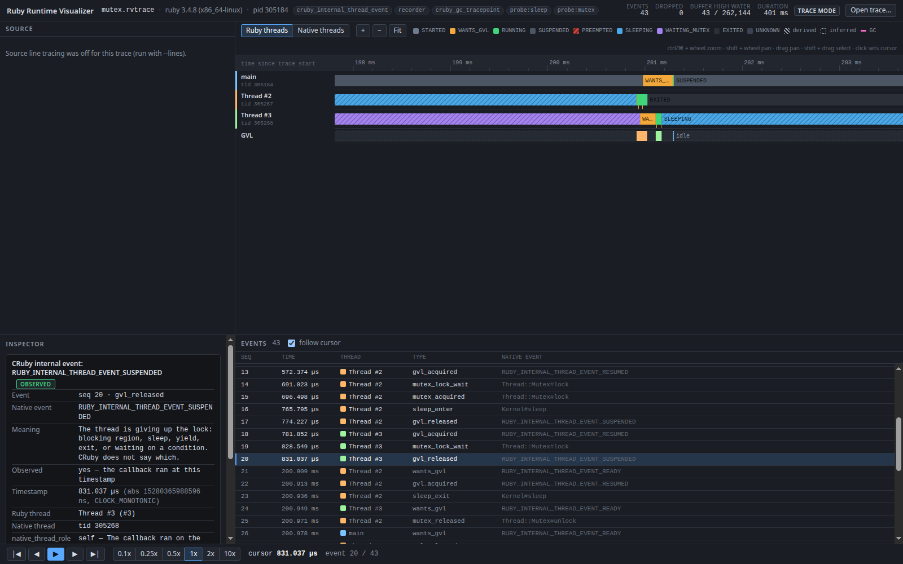

A recorder that subscribes to CRuby's own thread instrumentation, so every wants the GVL, acquired, released, started and exited in a trace is the scheduler's transition, timestamped from inside the VM. A viewer that turns it into lanes, a GVL owner track and a replay. Nothing is simulated.
Kernel#sleep probe).$ runtime-visualizer trace examples/cpu_threads.rb
$ runtime-visualizer inspect cpu_threads.rvtrace
time ruby_thread native event cruby event
0.000 ms main 304051 tracing_started -
…
0.383 ms Thread #2 304051 thread_started RUBY_INTERNAL_THREAD_EVENT_STARTED ← ran on main's native thread
0.531 ms Thread #2 304051 wants_gvl RUBY_INTERNAL_THREAD_EVENT_READY
…
0.607 ms main 304051 gvl_released RUBY_INTERNAL_THREAD_EVENT_SUSPENDED
0.733 ms Thread #2 304135 gvl_acquired RUBY_INTERNAL_THREAD_EVENT_RESUMED ← its own native thread
102.454 ms Thread #2 304135 gvl_released RUBY_INTERNAL_THREAD_EVENT_SUSPENDED ← 100 ms timeslice
102.459 ms Thread #2 304135 wants_gvl RUBY_INTERNAL_THREAD_EVENT_READY
102.610 ms Thread #3 304136 gvl_acquired RUBY_INTERNAL_THREAD_EVENT_RESUMED
…
451.038 ms Thread #2 304135 sleep_enter Kernel#sleep ← probe, not the scheduler
451.045 ms Thread #2 304135 gvl_released RUBY_INTERNAL_THREAD_EVENT_SUSPENDED
651.331 ms Thread #2 304135 wants_gvl RUBY_INTERNAL_THREAD_EVENT_READY
651.335 ms Thread #2 304135 gvl_acquired RUBY_INTERNAL_THREAD_EVENT_RESUMED
… rows elided; the source column is dropped for width. The file is spec/fixtures/cpu_threads.rvtrace.
threads:
main id=1 native=304051 running=0.618 ms
Thread #2 id=2 native=304135 running=509.605 ms
Thread #3 id=3 native=304136 running=521.731 msThread#status says "run". This says who held the lock, when, and how you know.
Ruby exposes very little about its scheduler from Ruby. CRuby does expose it from C:
since 3.2, rb_internal_thread_add_event_hook calls you at
every transition of the thread scheduler. The recorder lives there.
Thread.list.map(&:status) # => ["run", "run", "sleep"] # "run" means runnable. Two threads # say "run"; only one owns the GVL. # Which one, since when, and why the # other is waiting: not available.
102.454 ms T2 SUSPENDED released the lock 102.459 ms T2 READY wants it back 102.610 ms T3 RESUMED sched->running == T3 # One event per scheduler transition, # CLOCK_MONOTONIC nanoseconds, the # native thread that ran the hook.
READY, RESUMED, SUSPENDED, STARTED, EXITED straight from
thread_pthread.c. GC enter and exit from the
internal GC tracepoint. No polling, no guessing from timestamps.
A Ruby thread is a serial; the native thread is an attribute of each event.
Under RUBY_MN_THREADS=1 several Ruby threads share one
pthread, and the native view shows it.
Each record names its source channel, the CRuby constant behind it and whether the fact was observed, derived or inferred. The viewer shows it, the docs explain it.
The scheduler never says why a thread released the lock. Two probes running
with the GVL (Kernel#sleep, Mutex#lock)
let the model label SLEEPING and WAITING_MUTEX, marked as derived.
Hooks write into a lock-free ring and never block the scheduler. If the ring
fills, the trace carries an events_dropped record with the
count, and stats shows the high-water mark.
Play the trace at 0.1x–10x, step event by event, zoom from seconds to microseconds,
click any block for the technical card, and see source lines per thread when recorded
with --lines.
Technical honesty is the feature. A block on the timeline is either something the VM reported, something computed from those reports by a documented rule, or a guess about the gap before the first event. The three are labelled and drawn differently.
| Fact | Comes from | Precision |
|---|---|---|
| A thread wants, got or released the GVL | RUBY_INTERNAL_THREAD_EVENT_READY / RESUMED / SUSPENDED | observed |
| A thread started or exited | RUBY_INTERNAL_THREAD_EVENT_STARTED / EXITED | observed |
| GC started or finished | RUBY_INTERNAL_EVENT_GC_ENTER / GC_EXIT | observed |
A thread called sleep | probe around Kernel#sleep, with the GVL | observed (the call) |
| A thread is SLEEPING | a SUSPENDED interval enclosed by the sleep probe | derived |
| A thread is WAITING_MUTEX | a SUSPENDED interval enclosed by the mutex probe | derived |
| A thread was PREEMPTED | another thread's RESUMED while this one had not released (Ruby 3.2) | derived |
| Who owns the GVL between two events | the last RESUMED not yet followed by SUSPENDED | derived |
| The ractor of a thread | not in the event; 1 when the process has a single ractor | derived / null |
| A thread's state before its first event | nothing | inferred |
Thread.pass, a mutex, a queue, a timeslice, exit
all look the same), which ractor it belongs to, and on 3.3+ which native thread a READY
was delivered on. The trace carries those gaps as null and
unknown instead of filling them in.
The hooks were read in thread_pthread.c for 3.2.5, 3.3.0, 3.4.8
and 4.0.0 and then checked by recording the same two-thread program on each. The
differences are real and the model handles them without hiding them.
When the 100 ms slice expires, the preempted thread reports READY straight from RUNNING while the next one reports RESUMED. The model closes the owner at the other thread's RESUMED and labels the gap PREEMPTED.
thread_sched_to_waiting and
native_sleep both fire the hook. Both are recorded;
a repeated transition simply does not open a new block.
STARTED runs on the thread that called Thread.new; READY
runs on whoever woke the thread up. Only RESUMED, SUSPENDED and EXITED are on the
thread's own native thread, so only those decide the native view.
With RUBY_MN_THREADS=1 the recorder sees T2 and T3 taking
turns on native thread 285098. A native thread id is an attribute of an event, never
the identity of a Ruby thread.
0.217 ms T2 tid=285098 RESUMED
101.861 ms T2 tid=285098 SUSPENDED
101.863 ms T2 tid=285098 READY
101.865 ms T3 tid=285098 RESUMED ← T3 runs on T2's native thread
203.674 ms T3 tid=285098 SUSPENDED
203.675 ms T2 tid=285098 RESUMEDOne lane per Ruby thread, a GVL owner lane with idle drawn explicitly, a native threads view, an event list that follows the cursor, and an inspector that names the CRuby event behind whatever you clicked.

$ git clone https://github.com/carlosdanielpohlod/ruby-runtime-visualizer
$ cd ruby-runtime-visualizer && bundle install && bundle exec rake compileCRuby 3.2 or newer on Linux. JRuby, TruffleRuby and Windows have no thread hooks to subscribe to.
$ bundle exec exe/runtime-visualizer trace your_script.rb
$ bundle exec exe/runtime-visualizer trace --lines your_script.rb # + source lines, high overhead
# or from Ruby
require "runtime_visualizer"
RuntimeVisualizer.trace("out.rvtrace") do
2.times.map { Thread.new { work } }.each(&:join)
end$ bundle exec exe/runtime-visualizer inspect out.rvtrace # table + per-thread summary
$ bundle exec exe/runtime-visualizer stats out.rvtrace # dropped events, buffer high water
$ bundle exec exe/runtime-visualizer export --perfetto out.rvtrace -o out.json # ui.perfetto.dev
$ cd web && npm install && npm run dev # then drop out.rvtrace on the page
Median of five rounds on a four-thread workload, Ruby 3.4.8 and 3.2.5, from
benchmarks/overhead.rb. The default channels record one event
per scheduler transition; the line channel records every Ruby line.
--lines, and it changes when timeslices expireThe extension explains, at each callback, which lock the caller holds and why it cannot call into Ruby. The docs record what was verified and how.
Where each event fires per version, the raw dumps, and the decisions that followed.
02The .rvtrace format, event types, the state model and the GVL lane rules.
03The APIs used, their stability, and the safety rules the recorder follows.
04Ring buffer, identity, drain, protocol, exporters, viewer, and why each is where it is.
05What cannot be seen, what looks odd but is real, and what is not built.
06How pause/step could work without blocking inside a scheduler hook, and the deadlocks to avoid.